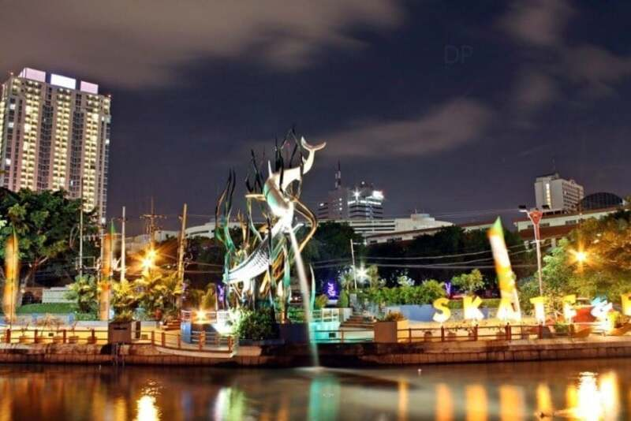

Sejarah
Bukti sejarah menunjukkan bahwa Surabaya sudah ada jauh sebelum zaman kolonial, seperti yang tercantum dalam prasasti Trowulan I, berangka 1358 M. Dalam prasasti tersebut terungkap bahwa Surabaya (Śūrabhaya) masih berupa desa di tepi sungai Brantas dan juga sebagai salah satu tempat penyeberangan penting sepanjang daerah aliran sungai Brantas. Surabaya juga tercantum dalam pujasastra Kakawin Nagarakretagama yang ditulis oleh Empu Prapañca yang bercerita tentang perjalanan pesiar Raja Hayam Wuruk pada tahun 1365 M dalam pupuh XVII (bait ke-5, baris terakhir). Walaupun bukti tertulis tertua mencantumkan nama Surabaya berangka tahun 1358 M (Prasasti Trowulan) dan 1365 M (Nagarakretagama), para ahli menduga bahwa wilayah Surabaya sudah ada sebelum tahun-tahun tersebut. Menurut pendapat budayawan Surabaya berkebangsaan Jerman Von Faber, wilayah Surabaya didirikan tahun 1275 M oleh Raja Kertanegara sebagai tempat permukiman baru bagi para prajuritnya yang berhasil menumpas pemberontakan Kemuruhan pada tahun 1270 M. Pendapat yang lainnya mengatakan bahwa Surabaya dahulu merupakan sebuah daerah yang bernama Ujung Galuh (Jung-Ya-Lu menurut catatan china). Versi lain menyebutkan, Surabaya berasal dari cerita tentang perkelahian hidup-mati antara Adipati Jayengrono dan Sawunggaling. Konon, setelah mengalahkan pasukan Kekaisaran Mongol utusan Kubilai Khan atau yang dikenal dengan pasukan Tartar, Raden Wijaya mendirikan sebuah keraton di daerah Ujung Galuh dan menempatkan Adipati Jayengrono untuk memimpin daerah itu. Lama-lama karena menguasai ilmu buaya, Jayengrono semakin kuat dan mandiri sehingga mengancam kedaulatan Kerajaan Majapahit. Untuk menaklukkan Jayengrono, maka diutuslah Sawunggaling yang menguasai ilmu sura.